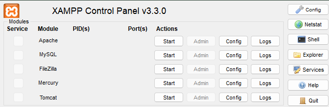
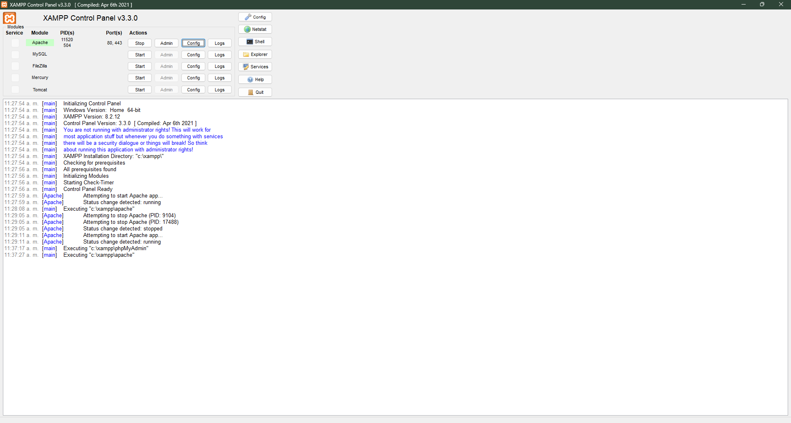
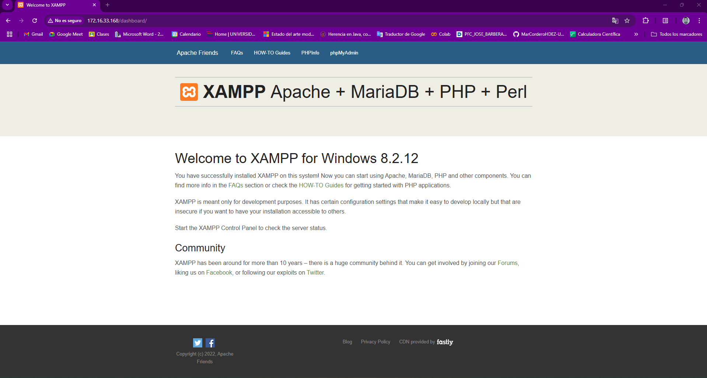
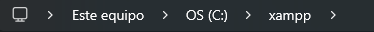
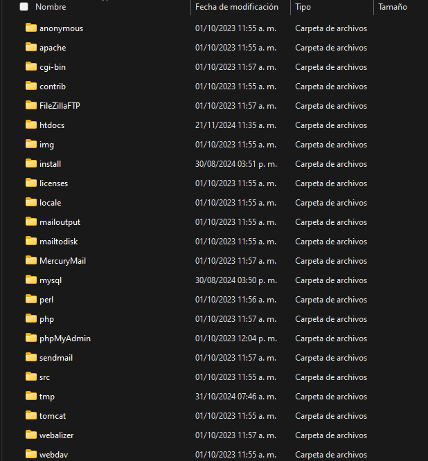
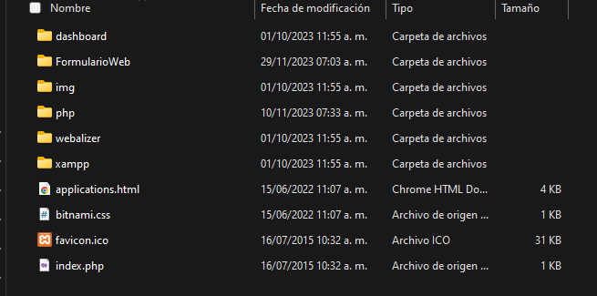
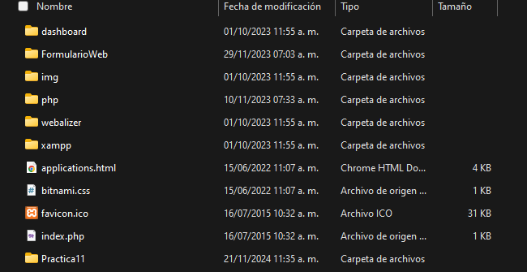
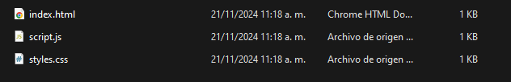
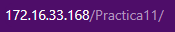
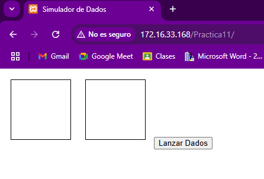

Abrimos XAMPP
Iniciamos Apache
Damos en Admin y nos dirigira al Dashboard
En nuestros archivos buscamos xampp
Buscamos la carpeta htdocs y entramos
Veremos las carpetas que estan disponibles
Añadimos la carpeta donde estan nuestros archivos
Corroboramos que todos los archivos esten ahi
En el navegador ponemos el nombre de la carpeta
Veremos nuestra pagina
